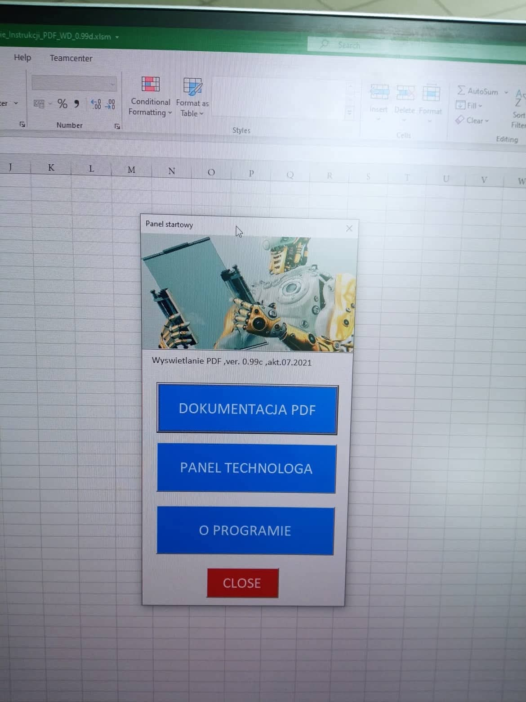
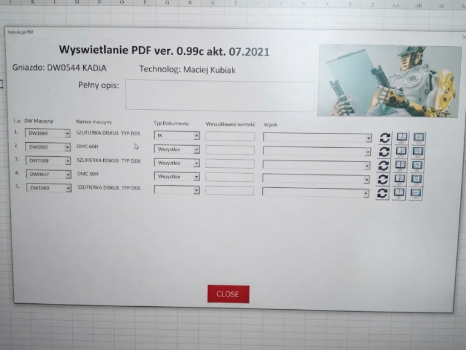
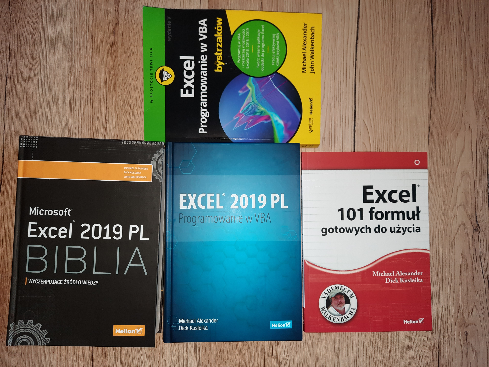

Od pożaru fabryki i „VBA dla bystrzaków” do cyfrowego kiosku PDF
Autorski system automatyzacji procesów i zarządzania dokumentacją, który powstał w trakcie 3-tygodniowego przestoju spowodowanego pożarem w sąsiedztwie (wspólne media). Zamiast bezczynnie czekać, zbudowałem zintegrowany ekosystem VBA, zastępujący archaiczne metody pracy i obsługujący ponad 4000 dokumentów na SharePoint.
Wyzwanie inżynieryjne i stan wyjściowy
Pożar sąsiadującego zakładu i odcięcie mediów zatrzymały produkcję na 3 tygodnie. Sytuacja obnażyła kruchość dotychczasowych procesów: przed audytami masowo przedrukowywano papierowe instrukcje, co generowało chaos i marnotrawstwo. Ręczne szukanie dokumentacji, walka z ciężkimi plikami Excela oraz zmiana brandingu po zmianach właścicielskich paraliżowały dział techniczny. Wykorzystując literaturową klasykę („VBA dla bystrzaków”, Biblia Excela) oraz fora, stworzyłem cyfrowy kiosk umożliwiający m.in. wygodne wyświetlanie jednej lub dwóch stron PDF bezpośrednio w programie. Prezentowane zdjęcia mają charakter poglądowy – ze względu na zachowanie poufności (NDA) nie pokazuję pełnych instrukcji.
Architektura rozwiązania i stos technologiczny
- Cyfrowy Kiosk dla Operatorów (UserForm): Panel startowy na stanowisku roboczym, zapewniający błyskawiczny podgląd dokumentacji z opcją wyświetlania 1 lub 2 stron PDF w programie.
- Zaawansowany moduł wyszukiwania i filtracji: Dynamiczne wyszukiwanie po ID maszyny, ID dokumentu lub po treści – wyniki same się zacieśniają w formie wybieranych list (np. gniazda produkcyjne DW0544 KADIA, instrukcje kontrolne IK, specyfikacje maszyn DMC 60H, szlifierki DDS).
- Moduł dla technologa: Dedykowany, osobny moduł usprawniający codzienną pracę technologów i zarządzanie bazą danych.
- Automatyzacja SharePoint & Masowy Rebranding: Skrypty VBA radzące sobie z przeszukiwaniem 4000+ plików oraz seryjną podmianą logo i nagłówków po przekształceniach gospodarczych w kilka minut (eliminacja masowego przedruku przed audytami).
- Automatyzacja raportowania kosztowego: Web scraping portalu dostawcy, pobieranie danych, generowanie tabel przestawnych i automatyczna wysyłka zestawień przez Outlooka.
Rezultaty biznesowe
Zewnętrzny dostawca wycenił podobny cyfrowy kiosk na 90 000 PLN. Narzędzie powstało całkowicie in-house w trudnych warunkach kryzysowych. Zlikwidowano chaos dokumentacyjny, powstrzymano masowe przedruki papierowe przed audytami, skrócono czas przygotowań i wdrożono standardy zgodne z Industry 4.0.


